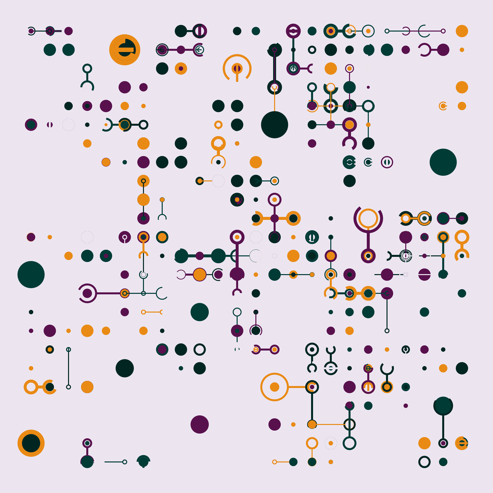

The Webonomicon
An Introduction to Web Programming for the Cautious and Weary

This tutorial is a short introduction to web programming using modern tools and practices for data scientists who are comfortable using Python but have never built interactive websites before. All of the material is available under open licenses, and contributions through our GitHub repository are welcome. All contributors are required to respect our Code of Conduct.
Please note: this tutorial is still being outlined. Most sections will have additional examples (and much more explanation) before learners encounter it. Suggestions and help are greatly appreciated.
Learner Persona
- Sabina, 28, has a master's degree in animal physiology and now works for a mid-sized veterinary pharmaceutical company.
- She learned a bit of R in an undergraduate biostatistics course, then picked up Python in grad school. She spends several hours a week analyzing data with Pandas and visualizing it with Plotly Express, and is comfortable with basic Git commands.
- Sabina recently became responsible for maintaining a dashboard application built with Dash. She believes a better understanding of how web applications work in general will help her debug and extend it.
- Sabina has tried doing asynchronous online courses a couple of times, but strongly prefers learning in real time with other people.
Syllabus
- Introduction: what we will learn, how to set up, and the data we will use
- HTML and CSS
- An Hour of JavaScript
- JavaScript in the Browser: using the language in its native habitat
- HTTP: how browsers and server talk to each other
- A Server: building a server with Flask
- Using a Database: getting data from SQLite using PyPika
- Testing the Server: testing the server with pytest
- Serving HTML: generating HTML with Jinja templates
- Using Forms: sending data to a server
- Using HTMX: letting the htmx library do the hard work
- Database Migration: managing database schema changes
- Authentication: checking the user's identity
- Testing in the Browser: using Selenium to test the user interface
- Encryption: keeping secrets safe
- Uploading Files: multi-step interactions
- Logging and Auditing: keeping of track of what's happened
- Permissions: representing and checking who can do what
- Accessibility: because everyone should be comfortable
- A Graphical User Interface: handling interactivity in the browser
- Dynamic Graphics: drawing pictures with SVG.js
- Internationalization: because everyone should be welcome
- Sessions: persistent sessions and JWT
- Caching: speeding things up
Appendices
Technologies
| Package | Purpose |
|---|---|
| Alpine.js | dynamic HTML |
| Beautiful Soup | HTML manipulation |
| deno | JavaScript |
| FastHTML | web framework |
| Flask | web server |
| Frappe Charts | charts |
| html5validator | validation |
| htmx | interaction |
| httpx | HTTP |
| Jinja2 | HTML templating |
| Polars | tabular data |
| PrettyTable | formatting |
| PyPika | query builder |
| pytest | testing |
| Selenium | testing |
| SQLite | database |
| SVG.js | graphics |